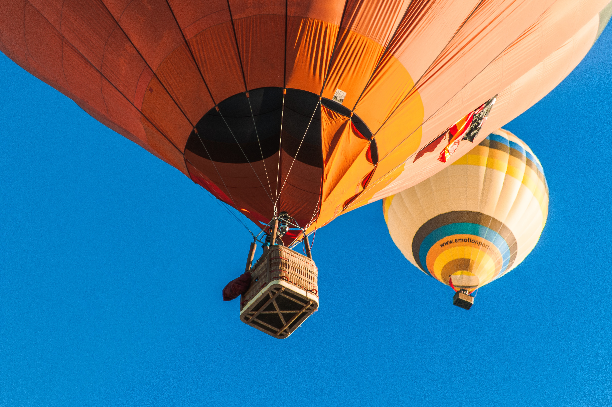

- Herr Spaghettibein
- Übernachtungsparty
- Ein kalter Wintertag
- Schorsch hat sich erkältet
- Die Ballonfahrt
Peppa Wutz - Die Ballonfahrt(The Balloon Ride)

YouTube에서 동영상 보기
Ich bin Peppa Wutz.
Das ist mein kleiner Bruder Schorsch.
Das ist Mama Wutz, und das ist Papa Wutz.
Peppa Wutz.
Die Ballonfahrt
Heute ist Sommerfest. Frau Muemmel macht eine Tombola.
@ Herreinspaziert, herreinspaziert. Der Preis ist eine Fahrt in meinem Heissluftballon.
@ Oh, das macht bestimmt Spass.
@ ich moechte ein Los bitte.
@ Das blaue Los gewinnt ein Spielzeugauto. Gut gemacht Klausi.
@ Ich moechte bitte auch ein Los.
@ Danke Peppa. Was moechtest du denn gewinnen?
@ Die Ballonfahrt!
@ Waere der hausgemachte Schokokuchen nicht besser?
Papa Wutz liebt hausgemachten Schokokuchen.
@ Das rote Los gewinnt: Die Ballonfahrt! - Hurrah! Alle an Bord fuer die Ballonfahrt! Wieviele Passagiere bitte?
@ Vier bitte.
@ Und Teddy und Sausia.
@ Und ein Teddy und ein Dinosaurier macht zusammen sechs. Alle Mann an Bord! Beeilung Papa Wutz. Komm an Bord.
@ Schnell Papa.
@ kappt die Taue, Leinen los, Volldampf vorraus.
@ Sehr eindrucksvoll Frau Muemmel, sie sind bestimmt ein erfahrener Kapitaen.
@ Eigentlich nicht. Das ist das erste mal dass ich einen Heissluftballon fahre. Festhalten!
Frau Muemmel heizt an, damit der Ballon in die Luft steigt.
@ Wiedersehen, - wiedersehen.
@ Wer von euch uebernimmt das Kartenlesen?
@ Das mache ich.
@ Bist du sicher Papa Wutz?
@ Ich bin sehr gut im Kartenlesen. Oh. Diese Karte ist ein bisschen kompliziert.
@ Sollen wir hoeher steigen?
@ Ja bitte, hoeher, hoeher!
Der Ballon steigt hoch in den Himmel.
@ Oh, wo ist der Himmel hin?
@ Keine Sorge Peppa, wir fliegen nur durch eine Wolke.
@ Oh, da ist der Himmel ja wieder. - Hurrah. Luftballon, Luftballon, flieg mit uns auf und davon. Flieg ganz hoch, flieg ganz hoch, hoeher als die Wolken noch. Guck mal Teddy, wir fliegen ganz hoch.
@ Peppa, sei vorsichtig, sonst fällt noch der--
@ Teddy! Teddy ist runtergefallen!
@ Keine Sorge, Peppa. Wir retten Teddy. Alle Mann festhalten! Wir gehen runter.
Frau Mümmel lässt den Ballon hinabsinken, damit Teddy gerettet werden kann.
@ Ich kann Teddy nirgends sehen!
@ Da ist er! Teddy hängt im Baum fest!
@ Ich nehme diesen Anker, um Teddy zu retten. Langsam... Langsam... Ich hab ihn!
Papa Wutz hat Teddy gerettet.
@ Teddy!
@ Hurra!
Oh je! Niemand achtet darauf, wohin sie fliegen.
@ Achtung! Baum voraus! Festhalten!
@ Oh... Erst hing Teddy im Baum fest und jetzt hängen wir im Baum fest!
@ Papa Wutz, weißt du, wo wir sind?
@ Äh...
@ Haben wir uns verfahren?
@ Ja.
@ Oooh.
@ Seht mal alle her! Ist das nicht Omas und Opas Haus?
@ Ja! Dann sind wir hier in Opa Wutz' Garten
@ Dachte ich mir.
@ Ahoi, ihr! Oma Wutz und Opa Wutz!
@ Du liebe Güte! Ahoi auch, Frau Mümmel!
@ Ähm.. Hilfe! Bitte!
@ Opa! Wir kommen nicht runter!
@ Keine Sorge, ich habe eine Leiter!
@ Hurra!
Alle klettern vom großen Ballon herunter.
@ Oma! Opa! Frau Mümmel hat uns mitgenommen in ihrem großen Ballon!
@ Wie überaus aufregend!
@ Ich fürchte, das Aufregendste, was wir bieten können, ist mein hausgemachter Schokoladenkuchen.
@ Hausgemachter Schokoladenkuchen! Das ist aufregend!
@ Das war die beste Ballonfahrt der Welt!
@ Und der beste Schokokuchen der Welt!
출처 : German / Peppa Wutz - Deutsch " Die Ballonfahrt"